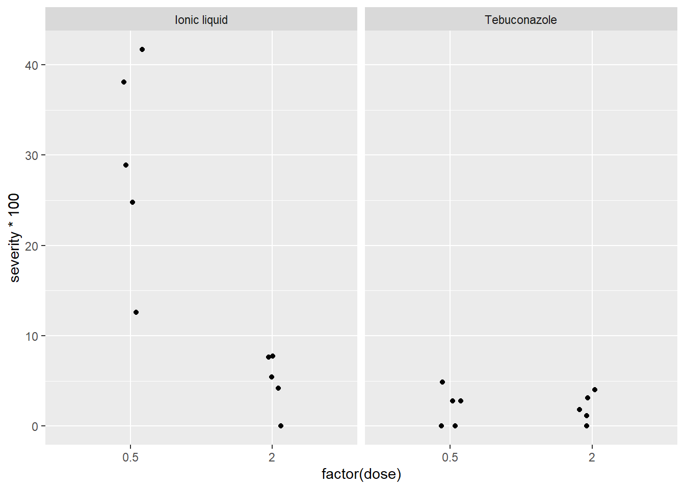
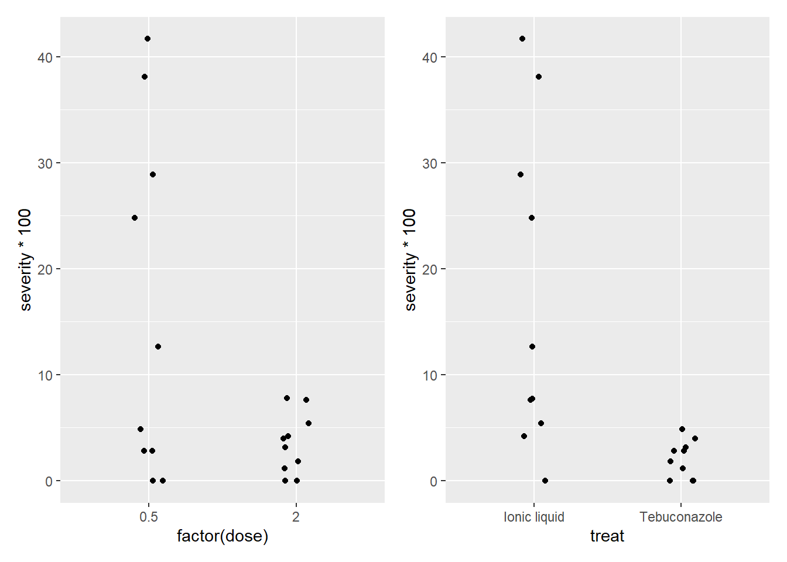

library(readxl)
antifungicos <- read_excel("dados-diversos.xlsx", sheet = "fungicida_vaso")
# análise de dois fatores, 4 tratamentosAula 3 - Anova Fatorial
Anova Fatorial
Vamos realizar uma ANOVA fatorial de dois fatores, também chamada de two-way ANOVA. Ela é especialmente útil quando você deseja entender não só os efeitos isolados de dois fatores sobre uma variável resposta, mas também se há interação entre esses fatores — ou seja, se o efeito de um fator depende do nível do outro.
Para isso, vamos importar os dados:
Esse gráfico mostra se as linhas entre os tratamentos cruzam ou não. Linhas paralelas sugerem ausência de interação entre treat e dose. Linhas que cruzam sugerem que o efeito da dose depende do tipo de tratamento (ou vice-versa).
library(tidyverse)
antifungicos |>
ggplot(aes(factor(dose), severity*100))+
geom_jitter(width = 0.1)+
facet_wrap(~treat)
interaction.plot(antifungicos$treat, antifungicos$dose, antifungicos$severity)
Gráficos exploratórios separados
Esses gráficos exploram os efeitos principais individualmente.
p1 <- antifungicos |>
ggplot(aes(factor(dose), severity*100))+
geom_jitter(width = 0.1)
p2 <- antifungicos |>
ggplot(aes(treat, severity*100))+
geom_jitter(width = 0.1)
library(patchwork)
p1 + p2
# há diferença entre as médias dos tratamentos, o efeito do tratamento depende da dose? ionic liquid funciona em doses diferentes, precisa de uma dose maior, enquanto o tebuconazole tem o mesmo efeito nas duas doses
#colocar a severidade em porcentagem = severity*100Modelo de ANOVA fatorial
m_anti <- lm(severity ~ treat*dose, data = antifungicos)
anova(m_anti)Analysis of Variance Table
Response: severity
Df Sum Sq Mean Sq F value Pr(>F)
treat 1 0.113232 0.113232 30.358 4.754e-05 ***
dose 1 0.073683 0.073683 19.755 0.0004077 ***
treat:dose 1 0.072739 0.072739 19.502 0.0004326 ***
Residuals 16 0.059678 0.003730
---
Signif. codes: 0 '***' 0.001 '**' 0.01 '*' 0.05 '.' 0.1 ' ' 1Aqui vamos aplicandar o modelo linear com interação (treat * dose), que equivale à ANOVA fatorial.
O output da anova() mostrará três testes:
treat: efeito do tipo de tratamentodose: efeito da dosetreat:dose: interação entre os dois
Análise dos resíduos
Avaliação gráfica dos resíduos do modelo para verificar as premissas de normalidade e homogeneidade.
library(DHARMa)
plot(simulateResiduals(m_anti))
Comparação entre médias
Aqui é feita a decomposição das médias para comparar o efeito da dose dentro de cada tratamento. Isso responde: “qual dose é mais eficaz dentro de cada tratamento?”
- Se fosse
treat | dose, a pergunta seria invertida: “qual tratamento é melhor em cada dose?”
library(emmeans)
library(multcomp)
# decompor as médias
media_anti <- emmeans(m_anti, ~ dose | treat)
media_antitreat = Ionic liquid:
dose emmean SE df lower.CL upper.CL
0.5 0.2921 0.0273 16 0.23420 0.3500
2.0 0.0501 0.0273 16 -0.00781 0.1080
treat = Tebuconazole:
dose emmean SE df lower.CL upper.CL
0.5 0.0210 0.0273 16 -0.03690 0.0789
2.0 0.0202 0.0273 16 -0.03768 0.0781
Confidence level used: 0.95 cld(media_anti)treat = Ionic liquid:
dose emmean SE df lower.CL upper.CL .group
2.0 0.0501 0.0273 16 -0.00781 0.1080 1
0.5 0.2921 0.0273 16 0.23420 0.3500 2
treat = Tebuconazole:
dose emmean SE df lower.CL upper.CL .group
2.0 0.0202 0.0273 16 -0.03768 0.0781 1
0.5 0.0210 0.0273 16 -0.03690 0.0789 1
Confidence level used: 0.95
significance level used: alpha = 0.05
NOTE: If two or more means share the same grouping symbol,
then we cannot show them to be different.
But we also did not show them to be the same. # dose | treat para saber a diferença entre os tratamentos, caso use treat | dose é possível avaliar a diferença entre as dosesCálculo do coeficiente de variação (CV%)
O coeficiente de variação é uma medida de dispersão relativa, muito usada em experimentos agrícolas. CV abaixo de 20% geralmente é considerado bom, mas isso depende da variável.
library(agricolae)
cv.model(m_anti)[1] 63.7165A análise estatística dos dados experimentais permitiu avaliar os efeitos de diferentes tratamentos antifúngicos e suas respectivas doses sobre a severidade da doença avaliada. Por meio da aplicação de uma ANOVA fatorial (two-way ANOVA), foi possível verificar tanto os efeitos principais dos fatores tratamento e dose, quanto sua interação.
Os resultados demonstraram que existe diferença significativa entre os tratamentos aplicados, bem como entre as doses utilizadas. Além disso, foi identificada uma interação significativa entre tratamento e dose, indicando que o efeito da dose na severidade da doença depende do tipo de tratamento utilizado. Essa interação foi visualmente confirmada no gráfico de interação, no qual as linhas não se apresentaram paralelas, sugerindo variação na eficácia dos tratamentos em função das diferentes concentrações aplicadas.
A decomposição das médias, obtida por meio do uso do pacote emmeans, reforçou essa observação: o tratamento com Ionic Liquid, por exemplo, apresentou melhor desempenho em doses mais elevadas, enquanto o Tebuconazole mostrou efeito consistente independentemente da dose utilizada.
A análise dos resíduos confirmou a adequação do modelo aos pressupostos estatísticos, assegurando a confiabilidade das inferências realizadas. Por fim, o coeficiente de variação (CV%) obtido foi considerado aceitável, reforçando a precisão dos resultados.
Dessa forma, conclui-se que tanto o tipo de tratamento quanto a dose influenciam a severidade da doença, sendo que a escolha do tratamento ideal deve considerar a dose aplicada, uma vez que o efeito não é uniforme entre os diferentes produtos avaliados.